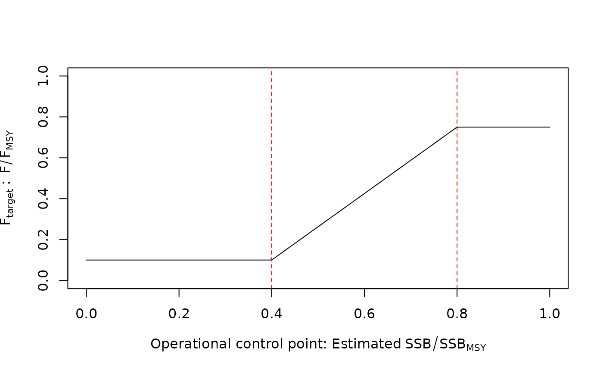
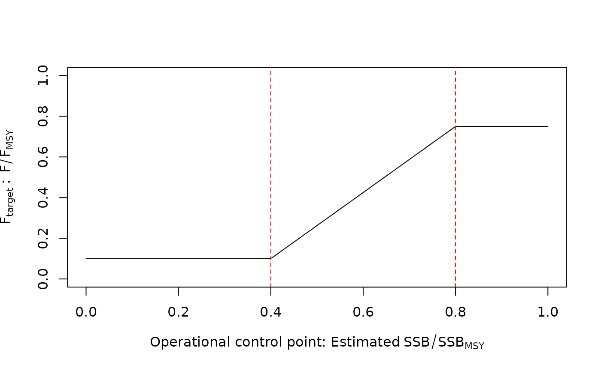

An output control rule with a ramp that reduces the target F (used for the TAC recommendation) linearly as a function of an operational control point (OCP) such as spawning depletion or spawning biomass. The reduction in F is linear when the OCP is between the target OCP (TOCP) and the limit OCP (LOCP). The target F is maximized at or above the TOCP. Below the LOCP, the target F is minimized. For example, the TOCP and LOCP for 40% and 10% spawning depletion, respectively, in the 40-10 control rule. Ftarget is FMSY above the TOCP and zero below the LOCP. This type of control rule can generalized with more control points (>2) in HCR_segment. Class HCR objects are typically used with function make_MP.
Usage
HCR_ramp(
Assessment,
reps = 1,
OCP_type = c("SSB_SSB0", "SSB_SSBMSY", "SSB_dSSB0", "F_FMSY", "F_F01", "F_FSPR"),
Ftarget_type = c("FMSY", "F01", "Fmax", "FSPR", "abs"),
LOCP = 0.1,
TOCP = 0.4,
relF_min = 0,
relF_max = 1,
SPR_OCP = 0.4,
SPR_targ = 0.4,
...
)
HCR40_10(Assessment, reps = 1, Ftarget_type = "FMSY", SPR_targ = 0.4, ...)
HCR60_20(Assessment, reps = 1, Ftarget_type = "FMSY", SPR_targ = 0.4, ...)
HCR80_40MSY(Assessment, reps = 1, Ftarget_type = "FMSY", SPR_targ = 0.4, ...)Arguments
- Assessment
An object of class Assessment with estimates of FMSY or UMSY, vulnerable biomass, and spawning biomass depletion in terminal year.
- reps
The number of stochastic samples of the TAC recommendation.
- OCP_type
The type of operational control points (OCPs) for the harvest control rule used to determine the reduction in F. See below.
- Ftarget_type
The type of F used for the target fishing mortality rate. See below.
- LOCP
Numeric, the limit value for the OCP in the HCR.
- TOCP
Numeric, the target value for the OCP in the HCR.
- relF_min
The relative value of Ftarget (i.e., as a proportion) if
OCP < LOCP.- relF_max
The relative value of Ftarget if
OCP > TOCP.- SPR_OCP
The value of spawning potential ratio for the OCP if
OCP_type = "F_FSPR". By default, 0.4 (F40%).- SPR_targ
The target value of spawning potential ratio if
Ftarget_type = "FSPR". By default, 0.4 (F40%).- ...
Miscellaneous arguments.
Value
An object of class MSEtool::Rec with the TAC recommendation.
Details
The catch advice is calculated using the catch equation of the corresponding
assessment. See Assessment@forecast$catch_eq, a function that returns the catch advice for a specified Ftarget.
Operational control points (OCP_type)
The following are the available options for harvest control rule inputs, and the source of those values in the Assessment object:
Default
"SSB_SSB0": Spawning depletion. Uses the last value inAssessment@SSB_SSB0vector."SSB_SSBMSY": Spawning biomass relative to MSY. Uses the last value inAssessment@SSB_SSBMSYvector."SSB_dSSB0": Dynamic depletion (SSB relative to the historical reconstructed biomass with F = 0). Uses the last value inAssessment@SSB/Assessment@TMB_report$dynamic_SSB0."F_FMSY": Fishing mortality relative to MSY. Uses the last value inAssessment@F_FMSY."F_F01": Fishing mortality relative to F_0.1 (yield per recruit), calculated from the data frame inAssessment@forecast[["per_recruit"]]."F_FSPR": Fishing mortality relative to F_SPR% (the F that produces the spawning potential ratio specified in"SPR_OCP", calculated from the data frame inAssessment@forecast[["per_recruit"]].
Fishing mortality target (Ftarget_type)
The type of F for which the corresponding catch is calculated in the HCR is specified here. The source of those values in the Assessment object is specified:
Default
"FMSY": Fishing mortality relative to MSY. Uses the value inAssessment@FMSY."F01": Fishing mortality relative to F_0.1 (yield per recruit), calculated from the data frame inAssessment@forecast[["per_recruit"]]."Fmax": Fishing mortality relative to F_max (maximizing yield per recruit), calculated from the data frame inAssessment@forecast[["per_recruit"]]."FSPR": Fishing mortality relative to F_SPR% (the F that produces the spawning potential ratio specified in"SPR_targ", calculated from data frame inAssessment@forecast[["per_recruit"]]."abs": Fishing mortality is independent of any model output and is explicitly specified inrelF.
Functions
HCR_ramp(): Generic ramped-HCR function where user specifies OCP and corresponding limit and target points, as well as minimum and maximum relative F target.HCR40_10(): Common U.S. west coast control rule (LOCP and TOCP of 0.1 and 0.4 spawning depletion, respectively)HCR60_20(): More conservative thanHCR40_10, with LOCP and TOCP of 0.2 and 0.6 spawning depletion, respectively).HCR80_40MSY(): 0.8 and 0.4 SSBMSY as the LOCP and TOCP, respectively.
References
Deroba, J.J. and Bence, J.R. 2008. A review of harvest policies: Understanding relative performance of control rules. Fisheries Research 94:210-223.
Edwards, C.T.T. and Dankel, D.J. (eds.). 2016. Management Science in Fisheries: an introduction to simulation methods. Routledge, New York, NY. 460 pp.
Punt, A. E, Dorn, M. W., and Haltuch, M. A. 2008. Evaluation of threshold management strategies for groundfish off the U.S. West Coast. Fisheries Research 94:251-266.
Restrepo, V.R. and Power, J.E. 1999. Precautionary control rules in US fisheries management: specification and performance. ICES Journal of Marine Science 56:846-852.
Examples
# 40-10 linear ramp
Brel <- seq(0, 1, length.out = 200)
plot(Brel, HCRlin(Brel, 0.1, 0.4),
xlab = expression("Operational control point: Estimated"~SSB/SSB[0]),
ylab = expression(F[target]~~": proportion of"~~F[MSY]),
main = "40-10 harvest control rule", type = "l")
abline(v = c(0.1, 0.4), col = "red", lty = 2)
 # create a 40-10 MP to run in closed-loop MSE
DD_40_10 <- make_MP(DD_TMB, HCR40_10)
# Alternatively,
DD_40_10 <- make_MP(DD_TMB, HCR_ramp, OCP_type = "SSB_SSB0", LOCP = 0.1, TOCP = 0.4)
# An SCA with LOCP and TOCP at 0.4 and 0.8, respectively, of SSB/SSBMSY
SCA_80_40 <- make_MP(SCA, HCR_ramp, OCP_type = "SSB_SSBMSY", LOCP = 0.4, TOCP = 0.8)
# A conservative HCR that fishes at 75% of FMSY at B > 80% BMSY but only reduces F
# to 10% of FMSY if B < 40% BMSY.
SCA_conservative <- make_MP(SCA, HCR_ramp, OCP_type = "SSB_SSBMSY", LOCP = 0.4, TOCP = 0.8,
relF_min = 0.1, relF_max = 0.75)
# Figure of this conservative HCR
Brel <- seq(0, 1, length.out = 200)
Frel <- HCRlin(Brel, 0.4, 0.8, 0.1, 0.75)
plot(Brel, Frel,
xlab = expression("Operational control point: Estimated"~SSB/SSB[MSY]),
ylab = expression(F[target]~":"~~F/F[MSY]),
ylim = c(0, 1), type = "l")
abline(v = c(0.4, 0.8), col = "red", lty = 2)

# A harvest control rule as a function of BMSY, with F independent of model output,
# i.e., specify F in relF argument (here maximum F of 0.1)
SCA_80_40 <- make_MP(SCA, HCR_ramp, OCP_type = "SSB_SSBMSY", LOCP = 0.4, TOCP = 0.8,
relF_min = 0, relF_max = 0.1)
# create a 40-10 MP to run in closed-loop MSE
DD_40_10 <- make_MP(DD_TMB, HCR40_10)
# Alternatively,
DD_40_10 <- make_MP(DD_TMB, HCR_ramp, OCP_type = "SSB_SSB0", LOCP = 0.1, TOCP = 0.4)
# An SCA with LOCP and TOCP at 0.4 and 0.8, respectively, of SSB/SSBMSY
SCA_80_40 <- make_MP(SCA, HCR_ramp, OCP_type = "SSB_SSBMSY", LOCP = 0.4, TOCP = 0.8)
# A conservative HCR that fishes at 75% of FMSY at B > 80% BMSY but only reduces F
# to 10% of FMSY if B < 40% BMSY.
SCA_conservative <- make_MP(SCA, HCR_ramp, OCP_type = "SSB_SSBMSY", LOCP = 0.4, TOCP = 0.8,
relF_min = 0.1, relF_max = 0.75)
# Figure of this conservative HCR
Brel <- seq(0, 1, length.out = 200)
Frel <- HCRlin(Brel, 0.4, 0.8, 0.1, 0.75)
plot(Brel, Frel,
xlab = expression("Operational control point: Estimated"~SSB/SSB[MSY]),
ylab = expression(F[target]~":"~~F/F[MSY]),
ylim = c(0, 1), type = "l")
abline(v = c(0.4, 0.8), col = "red", lty = 2)

# A harvest control rule as a function of BMSY, with F independent of model output,
# i.e., specify F in relF argument (here maximum F of 0.1)
SCA_80_40 <- make_MP(SCA, HCR_ramp, OCP_type = "SSB_SSBMSY", LOCP = 0.4, TOCP = 0.8,
relF_min = 0, relF_max = 0.1)